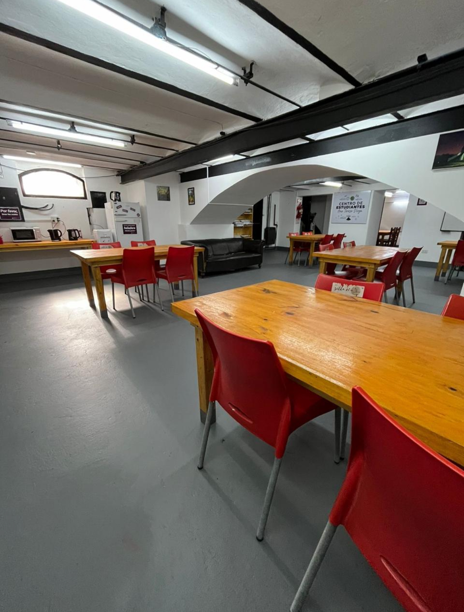
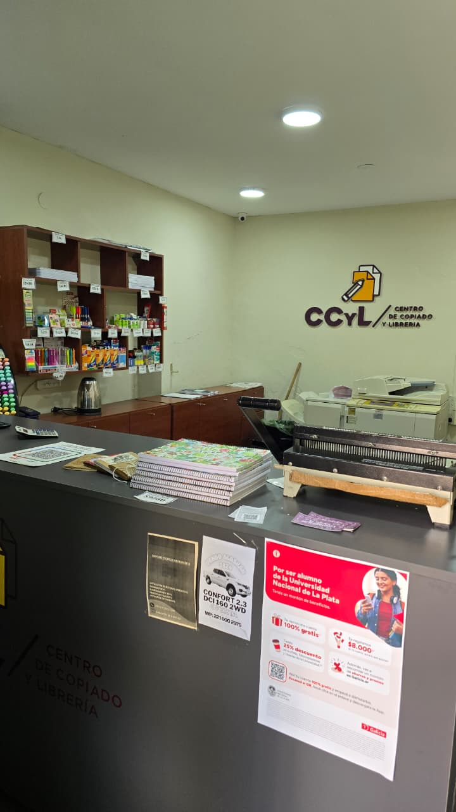
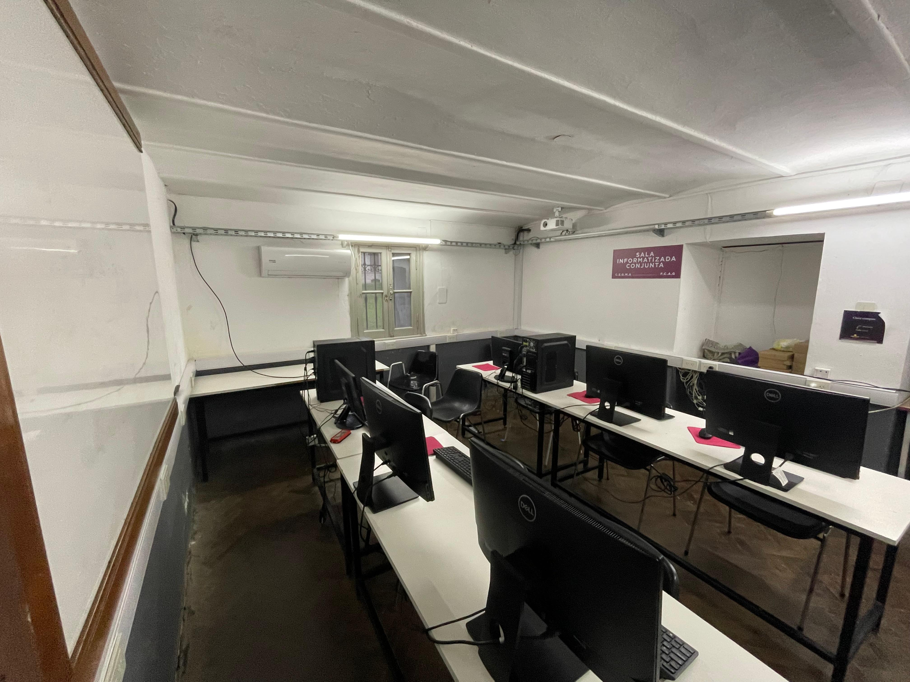
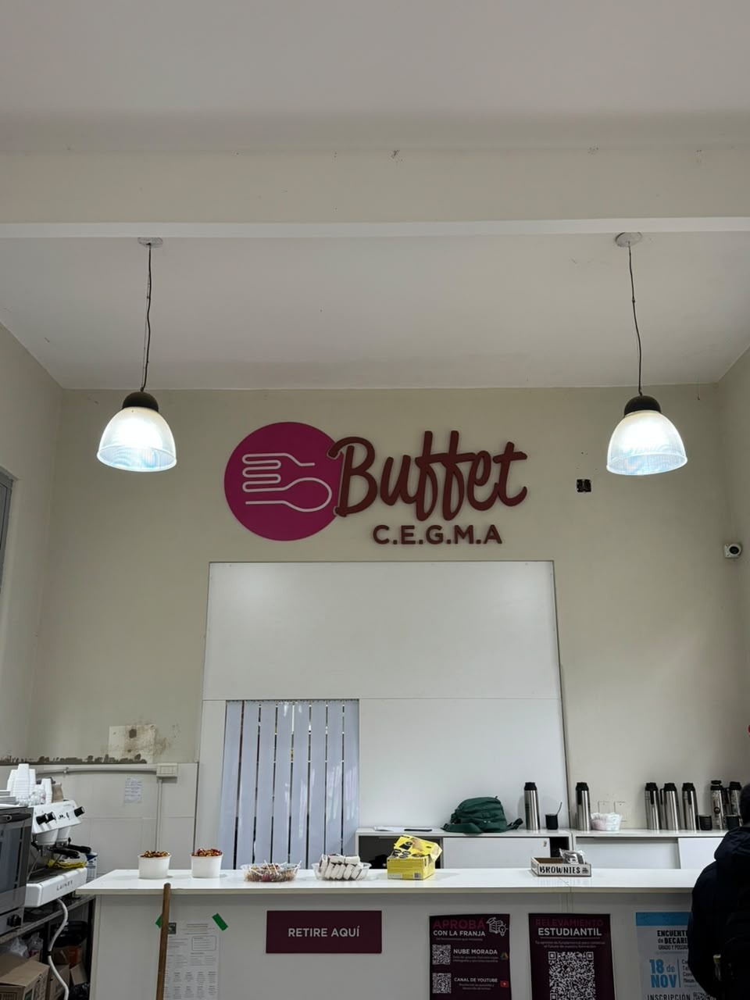
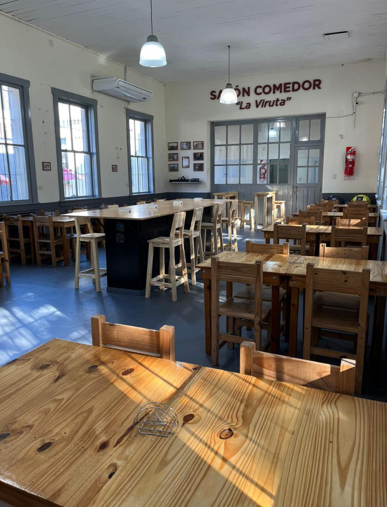
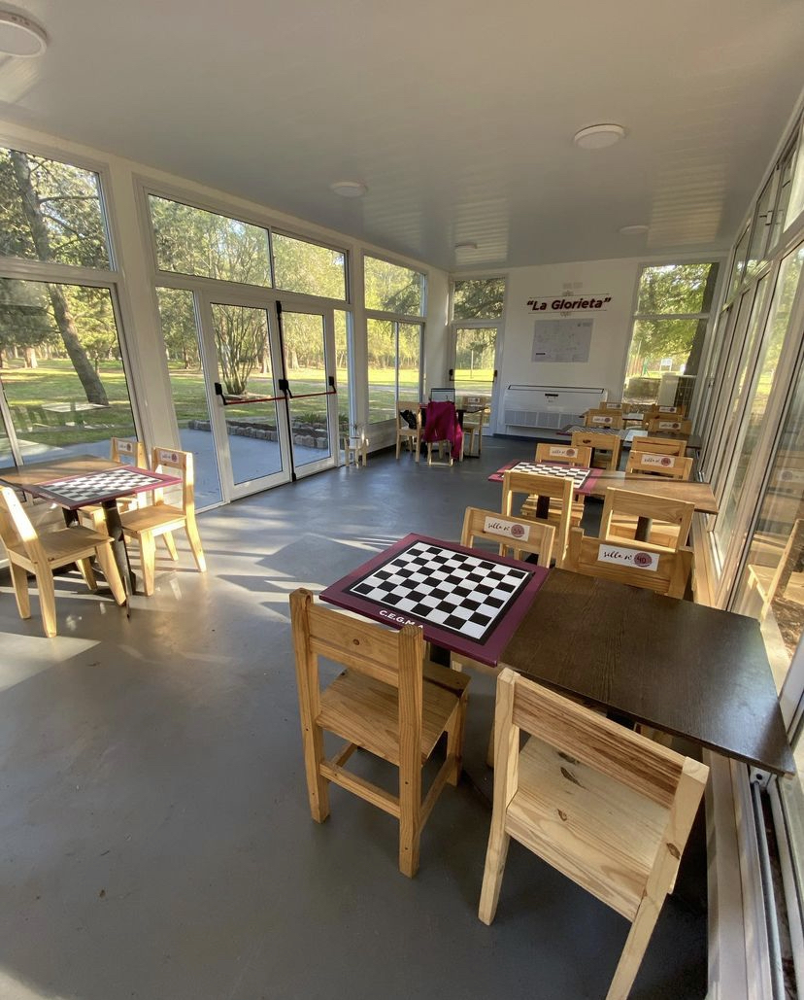

Facultad y Vida Profesional · Espacios del Centro
Espacios del Centro
Lugares pensados para estudiar, compartir, encontrarnos y hacer más cómoda la vida cotidiana en la Facultad.
Vida universitaria
Espacios que construimos y sostenemos
Tras años de trabajo, hoy contamos con distintos espacios al servicio de estudiantes del Observatorio. Son lugares para estudiar, comer, descansar, imprimir apuntes, reunirse y compartir la vida universitaria.

Espacio de estudio
CEGMA y sector de lockers
Un espacio pensado para el día a día estudiantil, con mesas, pizarras, WiFi, cocina, dispenser de agua fría y caliente, aire acondicionado y un sector de apuntes comunitario.
Además, sumamos un nuevo sector de lockers con capacidad para cientos de estudiantes, para que más personas puedan guardar sus materiales y moverse con mayor comodidad.
Servicios estudiantiles
Centro de Copiado y Librería
El Centro de Copiado y Librería funciona como una herramienta cotidiana para acompañar la cursada. Allí podés retirar apuntes, comprar artículos de librería y acceder a distintos recursos útiles para estudiar.
También incorporamos mejoras en el espacio y en la atención, facilitando medios de pago y una mayor comodidad para quienes lo usan todos los días.


Acceso tecnológico
Sala Informatizada Conjunta
Creada para ampliar el acceso a herramientas tecnológicas, la sala cuenta con computadoras, pizarrones, WiFi de alta velocidad y un entorno pensado para estudiar y trabajar de forma más cómoda.
Es un espacio clave para quienes necesitan conectividad, equipamiento o simplemente un lugar adecuado para avanzar con tareas y trabajos.
Encuentro y bienestar
Buffet, Salón Comedor y Sala de Estar
Un lugar para comer, descansar, compartir y encontrarse. Este espacio cuenta con mesas, sillas, proyector, WiFi, dispenser de agua y condiciones para hacer más cómoda la estadía en la Facultad.
Además, seguimos trabajando para mejorar su funcionamiento, sumar propuestas y hacer de este sector un espacio cada vez más útil para la comunidad estudiantil.



Estudio y tranquilidad
Glorieta
La Glorieta nació como una respuesta a la necesidad de contar con más espacio para estudiar. Hoy es uno de los lugares más elegidos por quienes buscan tranquilidad y un ambiente cómodo para concentrarse.
Cuenta con mesas, sillas, WiFi, dispenser de agua y aire acondicionado, y forma parte de los espacios que sostienen la vida cotidiana del estudiantado.